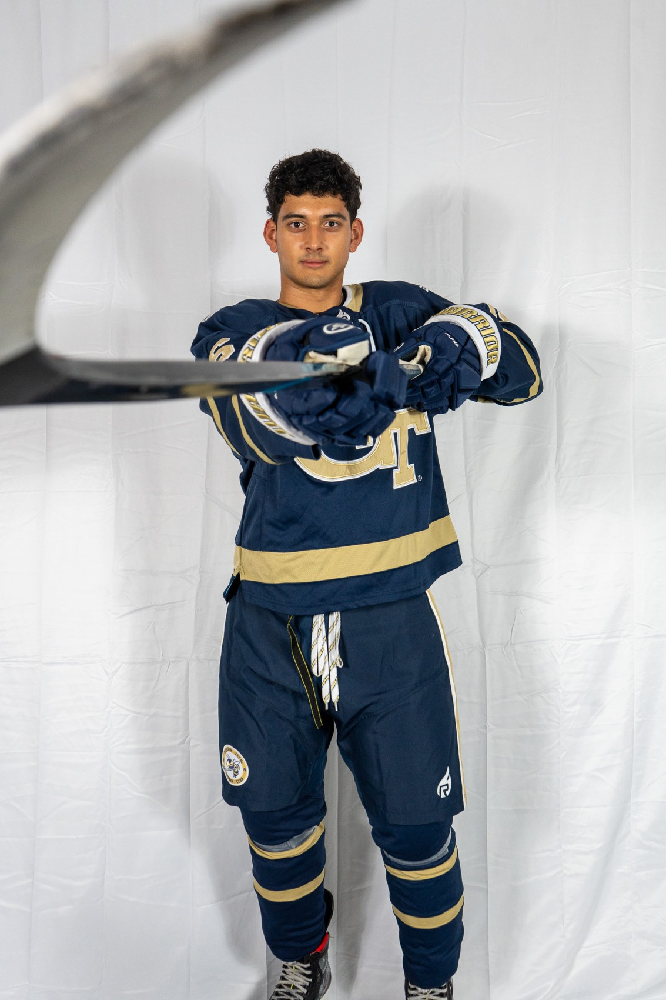
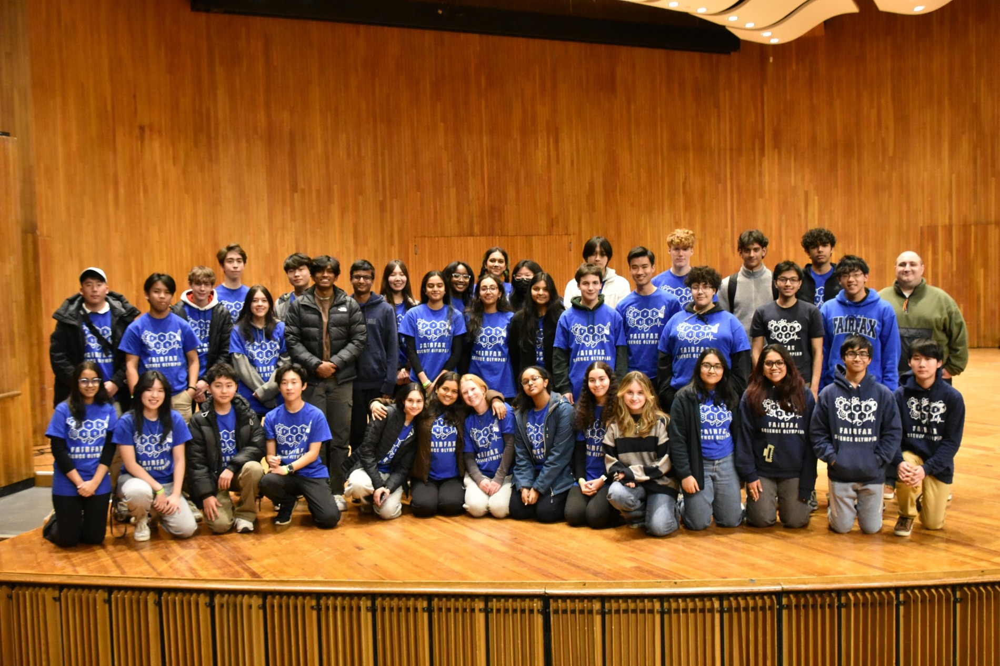

LEADERSHIP
Better together.
Teamwork and mentorship, from STEM competitions to the ice.

GEORGIA TECH / ACHA D2
Hockey
Now playing for Georgia Tech club ACHA Division II hockey.

STEM / TEAM LEADERSHIP
Science Olympiad
Leading a team of 100+ students across 23 STEM events.
2021–2025
Vice-President, Computer Science Honor Society
Directed student meetings on emerging computer science topics and coordinated projects, guest speakers, and service events.